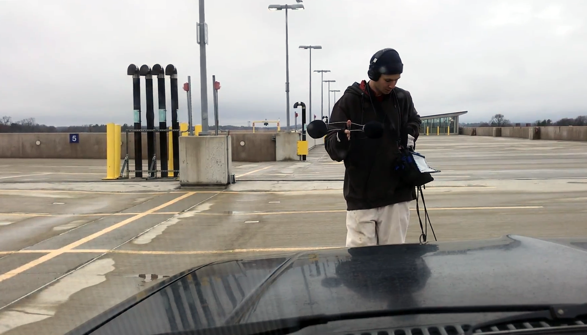
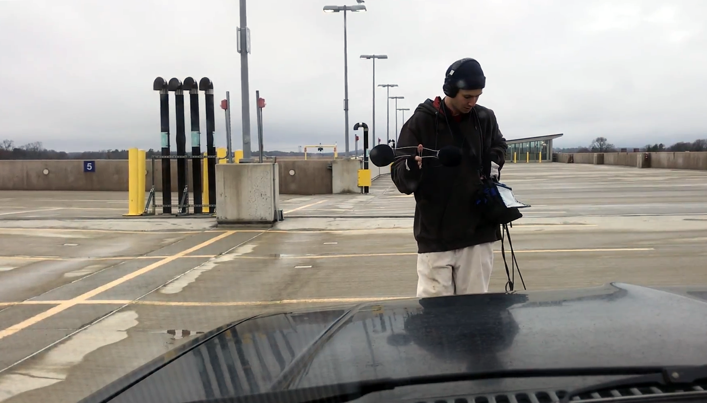
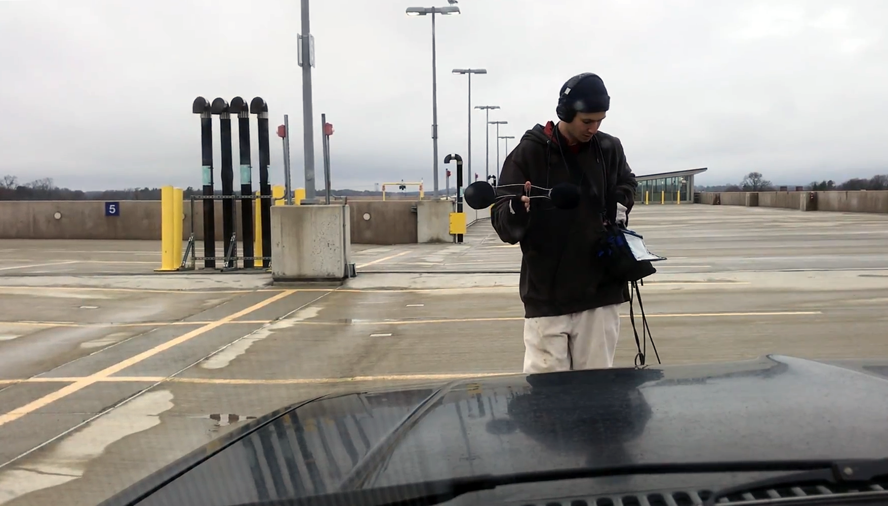

acoustic synthesis, field recording, improvisation, weather, spring
Road Soundsfolk music, "sonic ethnography", New England, sound-music
Music for 14 Oscillatorscombination, primitive spatialization, chords
Techno projectsound-system cultures, hermeneutics, midi as historical vehicle, rhythm & drone
“The sound of a car door slamming was not a sound. It was the sound of a car door slamming, and once you accepted this, you had to ask: Whose car? What kind of car? Where is this car? What color is the car?”
- Jim O’Rourke, speaking of Luc Ferrari
Road Sounds is a revision of what began as a “sonic ethnography” of transportation infrastructure in New England. Transportation infrastructure produces the noise-floor of urban experience, and Road Sounds proceeds from this floor, elevating it so that what is muted and flat unfolds towards the center of attention. As a rule, the aesthetic impingements of transportation infrastructure are filtered out as noise, and this is one reason I directed sustained attention towards them. A quintessentially modern response to the racket of urban noise has been to expand the category of music, which has proven infinitely pliable. Preceding the Futurists’ aggrandizement of war machinery and industrial sounds in the early twentieth century, Henry David Thoreau listened to humming telegraph wires, which sang in the wind like “aeolian harps.” Even in 1851, he expressed the now-common idea that "every sound is music now.” Since then, the avant-garde has championed music of a vast vocabulary, and taken this idea in many directions. As such, I'm not invested in treading over this ground again, although the various sounds of bridges and motors often appeal to my musical taste. My bone to pick is rather with the notion that the sounds of the roads tell no interesting histories.
My hypothesis is that uncut and extended field recordings uniquely afford an opportunity to examine listening practices-- not because they are objective records of anything, but because they present durations of time, rather than objects of sound. Consider in contrast musique concrète, in which recordings are chopped up and arranged in the abstract and empty space of magnetic tape. This is a negative time, filled up with sound. A microphone is privy to positively overflowing time-space, which inundates the sensitive capsule. An audio recording documents a continuous flow. By presenting a continuous span of audio-time, a recording facilitates a listening experience in which connections can be made without crossing bridges placed by the composer at any point after the recording event (i.e. overdubbing audio from different times, extensive cuts and fades, schizophonic sounds pasted from other segments of recorded audio). Unprocessed recordings preserve the “arbitrariness, unpredictability, and inadvertence of what appears” (Lyn Hejinian). The listener has an opportunity to listen to something. The point is not necessarily to transport the listener to a different space (immersion), but it is always to rewire one’s aesthetic response to a situation that is happening, or happened, somewhere else.
For example, on “Space 1, I-95 Median,” the microphones are inundated with the long tonal drones of cars displacing air on a busy highway. The median is an acoustic synthesizer, consisting not only of engine and automobile, but of the technology of ultra-smooth asphalt beneath it and a many-century lineage of terraforming in the service of war, speedy commerce, and leisure. This music does not exist without this idea of speed and of a certain territorial economy. By training the diaphragms of my microphones on the road for extended durations, familiar sounds are made strange, and our habituated listening formations begin to warp and focus on what strange conditions of possibility precede it.
1 Approaching That Which Does Not Sleep, Part 1
2 Space 1, I-95 Median in Attleboro
3 Approaching That Which Does Not Sleep, Part 2
4 Space 2, Parking Garage in Salem, Activated by a Horn
5 Approaching That Which Does Not Sleep, Part 3
6 Car Parts Cooling at Different Rates in Jamestown
7 Space 3, Platform in Providence
